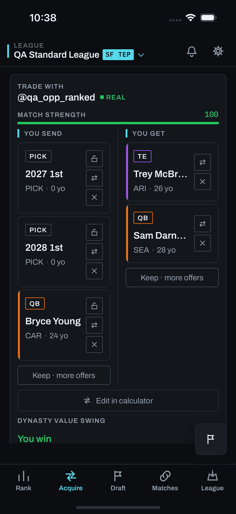
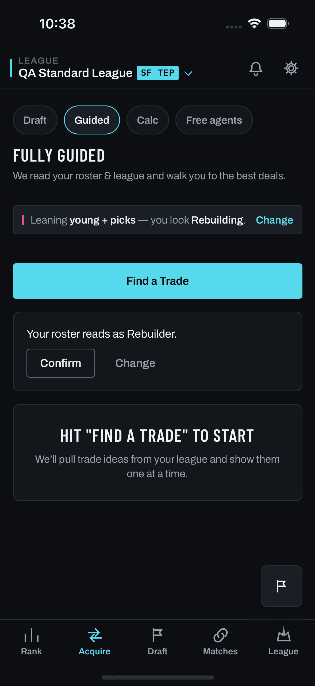
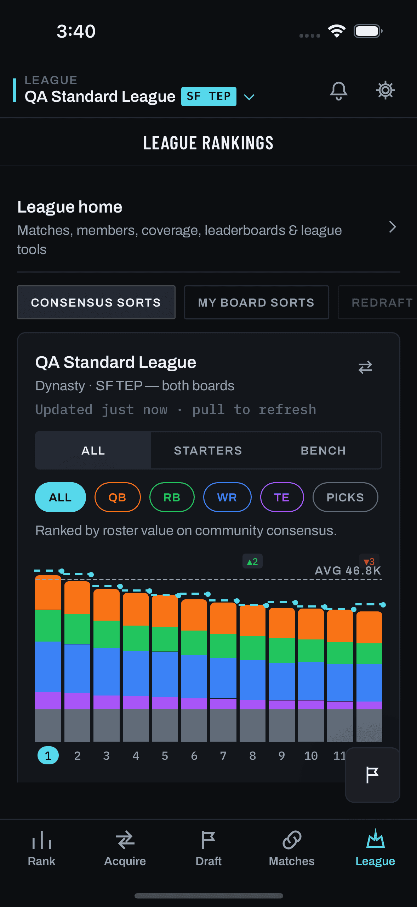

One question: what does “analyst-guided” actually mean for a team read, and where does it live inside the find-a-trade experience? Feedback #357 / #358 / #359 (tester jonbonjourvi, 2026-08-19, v1.15.0). Binding docs: docs/feedback/items/357-team-review/.
Per mockups/CLAUDE.md: nothing here is current app behavior and nothing here may be imported. Live design truth is docs/design/; current app behavior is screens/.
The hard rule in mockups/CLAUDE.md is that a mockup revising an existing screen embeds that screen’s real capture as its “current” pane. That rule is in conflict with the D-056 capture freeze; this lab follows the documented interim posture — embed the real capture where one exists, label what has moved since, and never present a reconstruction as a capture.

screens/mobile/trades/populated.png, captured 2026-08-10T23:42Z, manifest sha 106c8e38…. Exact ground truth for that build.
screens/mobile/trades/empty.png. The exhausted/empty deck is the lab’s second entry-point candidate (§3).
screens/mobile/league-summary/populated.png, 2026-08-11T00:29Z. The stacked value bar Team Review’s beat B1 reuses rather than reinvents.mobile/src/screens/TradesScreen.tsx has moved eleven times since the capture: 586dbba (08-11), 7057d86 (08-14), 6158e65 · c2e44b5 · 8827810 (08-15), 154c211 · a490281 (08-16), 00b2a2c (08-17), 60105ca · 5ac4e35 (08-18), 045c020 (08-19). Notably the guided-first landing and the TradeFinderModeBar chip strip are not in the capture above. There is no way to refresh it — D-056 retired the simulator and screens/ is frozen at 2026-08-11. Every frame below marked RECONSTRUCTION is drawn from source, not from a capture, and is labelled as such.
Every clause of Jon’s three items, against what exists in the repo today. Nothing below is designed until it appears in this table with a source.
| The ask (verbatim) | Source that exists | Verdict |
|---|---|---|
| “you’re sitting 6th in value” | GET /api/league/power-rankings — server.py:22709, per-team summed roster value + per-position split | IN — all platforms, all weeks |
| “…and 11th in PPG this year” | LeagueState.points_for / weekly_scores — backend/outlook/league_state.py:66,93 | IN, DEGRADED — Sleeper only (league_state.py:295–320 raises for ESPN/MFL/Fleaflicker) and empty in preseason |
| “We recommend a 1 year tank” | trade_service.infer_team_outlook — trade_service.py, returns contender/not_sure/rebuilder + vet_share / youth_share / pick_share / score | IN — pure function, no I/O, already feeds /api/league/preferences |
| “best ways to do that are sell players X,Y,Z” | POST /api/trades/asset-ideas — server.py:10944 (upgrade / lateral / downgrade per pinned asset) | IN — flag trade.asset_ideas already ON |
| “Here’s good targets (picks from other bad teams)” | power-rankings value rank + _power_picks_by_owner — server.py:22513 | IN — derivable, no new modeling |
| “(…players who could gain value)” | nothing — a forward projection | CUT — no source. See §6. |
| “you’re missing depth, consider tiering down from Loveland and Bijan” | analyze_roster_strengths → tier_depth {elite/starter/bench} + position_needs/position_surplus — trade_service.py:1826; optimal_starter_slots — power_rankings.py:120 | IN — tier_depth is computed today but never surfaced |
| “based on your rankings you’re higher on X and lower on Y to consensus. Target these” | GET /api/trends/consensus-gap — server.py:19342 (easiest_sells / easiest_buys); board Elo vs the universal DP seed as the always-available fallback | IN, WITH FALLBACK — the league-community layer needs ≥3 other rankers (trends_service.py:180) |
| “6 extra PPG this year” | nothing — no per-player weekly projection exists anywhere in the backend | CUT — see §6 |
| “raises your playoff odds to X” | GET /api/league/outlook — server.py:23185, flag LIT 2026-08-19 | IN, AS A BAND — operator override (D-094). Three-band chip on B1, Sleeper-only, “Projected” ribbon. Never the number X. |
| “and championship odds to Y” | odds.title_pct is served | CANNOT BE HONORED — unrenderable at any week, in any form (docs/cross-client-invariants.md § Playoff outlook bands; skill CI spans zero) |
| “an idiot version of wtf do I do next with this team” (#359) | the whole flow — this is the framing, not a data ask | IN — it is the acceptance test for the copy |
The operator asked for “analyst-guided: a walked-through read of the team rather than a static dashboard,” and gave the feature two jobs — help the user set their trade preferences, and determine team strategy. Three candidate forms; the second job is what decides it.
backend/trade_narrative.py, templates, no LLM).Team Review’s exit is not a paragraph — it is a deck that has been reshaped by what the user just agreed to. league_preferences.team_outlook, acquire_positions and trade_away_positions already steer generation (trade.outlook_direction, trade.lanes, the G6 R5 need gate, _filter_by_trade_intent). A stepped flow is the only one of the three forms with a natural slot for a write on every beat. That is what turns #359’s “wtf do I do next” from a read into an answer.
AnalystGuideThe repo already has the persona — six mascot poses in mobile/src/components/analyst/, a voice spec in docs/plans/onboarding-conversion/guided-avatar-script.md, and a beat engine in mobile/src/state/useGuide.ts. Team Review takes the persona and the beat concept and leaves the overlay:
| Piece | Reused? | Why |
|---|---|---|
AnalystAvatar poses (analyst/index.tsx) | YES | Same character the user already met in onboarding. Thinking / Point / Computing map cleanly onto beats. |
The voice rules in guided-avatar-script.md | YES | One idea per bubble, never traps the user, ✕ always skips. |
AnalystGuide.tsx spotlight overlay | NO | That overlay exists to teach a control by cutting a hole over it. Team Review presents data — there is no control to spotlight, so a cutout over a chart is theatre. It also mounts once in RootNav above the whole nav tree; a data surface must be a routed screen with real back behavior. |
useGuide step store | NO | It is coupled to the onboarding tour’s lifecycle (dismissTour, per-tour persistence, onboarding.guide_v2). Team Review needs local, disposable step state. |
The operator’s framing is “a Team Review button inside the find-a-trade experience — not a separate tab.” The obvious slot is the mode chip strip. It is measurably full.
mobile/src/components/TradeFinderModeBar.tsx:50–58, verbatim in the source comment: the five shipped chips “already measure ≈402pt against ≈361pt of usable width, so the strip is genuinely scrolled — an APPENDED sixth chip would sit off-screen and never be seen.” A sixth (Draft) was already added and had to lead the strip for exactly that reason. A seventh Team Review chip would either be invisible or would displace the operator’s 2026-08-06 decision that the draft chip leads.
TradesHome, which is exactly where #359 was filed. Dismiss is per-league and persisted; the entry survives in the overflow row so it is never lost.“Review” lands past the fold of a strip that is already scrolled. The one user who most needs this — the one who does not know what to do — is the least likely to scroll a chip rail to find out.
Each beat is one finding, one plain-language read, one action. Every number below traces to §1. All frames RECONSTRUCTION.
/api/league/power-rankings, plus /api/league/outlook for the band. Rev 2, 2026-08-19 — the operator lit outlook.odds (D-094), so the seam designed here is now live: a three-band chip, never a percentage, never championship odds, carrying the “Projected · preseason · beta” ribbon. The IDP line is meta.priced_slot_coverage — its first render in any client. The PPG card stays the honest preseason state. No action; orientation only.infer_team_outlook (the same function /api/league/preferences already calls for its one-tap confirm). Action: writes league_preferences.team_outlook. This is the single highest-value write in the feature and it is Jon’s “we recommend a 1 year tank”, phrased as a question rather than an instruction. The two extreme labels are offered but never inferred — inference confidence does not justify α=1.00.analyze_roster_strengths.tier_depth (computed today, never surfaced) + optimal_starter_slots. This is Jon’s “you’re missing depth, consider tiering down from Loveland and Bijan” — expressed as the general rule (deep at RB, thin at TE) rather than as two hardcoded names. Action: writes acquire_positions / trade_away_positions — the Chasing/Shopping surface./api/trends/consensus-gap when has_baseline, else board Elo vs the universal DP seed. Jon’s “you’re higher on X and lower on Y to consensus. Target these in trades” — and note the inversion: being high on a player makes him a sell, not a target. Action: pins an asset into the finder (/api/trades/asset-ideas).infer_team_outlook run over each league-mate’s roster (the same pure function — no new modeling), power-rankings value rank, and _power_picks_by_owner. This is Jon’s “good targets (picks from other bad teams)”. Action: scopes the deck to one team — the existing opponent_user_id path.Three states will be common in the real world and each must read as a fact, not a failure.
Every beat except the PPG line works at week 0. The flow does not gate itself off — it degrades one card.
backend/outlook/league_state.py:295–320 — only Sleeper has a LeagueState provider. The PPG card names the platform limit; the other five beats are platform-independent.trends_service.py:180); the DP-seed fallback needs the user to have ranked anything at all. Beat B4 skips itself rather than showing an empty comparison — and routes to the fix.Jon asked for “here’s 6 extra PPG this year, which raises your playoff odds to X and championship odds to Y.” All three halves fail for different, documented reasons. What replaces them is already built and already ON.
projection-source-research.md). 64% → 78% is a bare authoritative percentage, forbidden by the band invariant. 9% → 14% is title_pct, unrenderable at any week because the model has no demonstrated skill.starter_impact.slots[].before/after — server.py _starter_impact, carrying tier and positional rank behind trade.position_impact, already ON. It answers Jon’s real question — “what does adding this player to my team do?” — in units FTF can defend, and it is more specific than a single PPG scalar, not less.Every figure shown is a measured or computed value, with exactly one forecast: the playoff band, which renders as a three-band chip with a “Projected” ribbon and is labelled a projection everywhere it appears — never a bare percentage. Championship odds are never rendered in any form, and that is the one rule here that is not a preference: the model has no demonstrated skill, so there is nothing honest to show. No number in this design is invented to fill a slot.
Lab: mockups/team-review-2026-08-19/ · Binding docs: docs/feedback/items/357-team-review/ · Opened 2026-08-19.